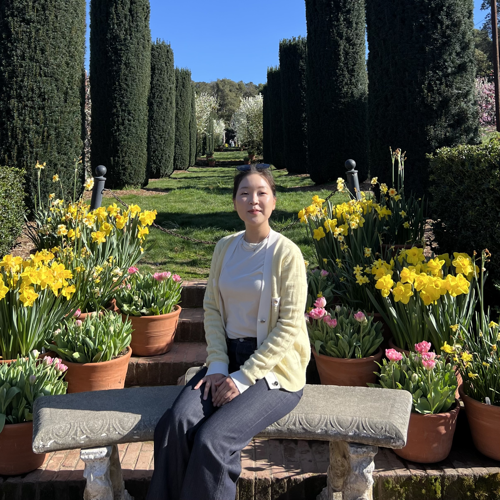

Heejin Kang (Leslie)
I am curious about the commercialization of embodied intelligence, especially the venture and corporate endeavors that make it happen. I have been an equity research analyst at Samsung Securities for four years, where I covered Korea's automotive and robotics sectors. My job involved tracking early inflection points for the robot industry before it had meaningful institutional visibility, and building relationships with founders and investors across the ecosystem.
|
 Photo placeholder — replace with images/profile.jpg |
Research |
|
Report
|
Robots: Searching for the Missing Pieces to Commercialization
Samsung Securities Research Center — Sep 2024
Sector initiation: my debut and in-depth coverage of the robotics sector, drawing on established manufacturers and academic literature to distill a framework for evaluating the sector's readiness for commercialization. |
|
Report
|
HMC Visit Note: Leveling Up in the US
Samsung Securities Research Center — Dec 2022
My first self-initiated research project, completed independently while covering for my analyst on the trip. Visits to Boston Dynamics and Motional provided the foundational inspiration and perspective that shaped my subsequent work as robotics analyst. |
|
Report
|
Korean Market Sentiment on Humanoids
Samsung Securities Research Center — 2025
Tracks the shifting Korean investment narrative around humanoid robots. I argue that "successful applications" — verifiable through actual earnings and robust commercial track records — will be the most meaningful measure of competitiveness in the long run. |
|
Weekly
|
Robot Weeklies (Apr – Jun 2025)
Samsung Securities Research Center — Apr–Jun 2025
A recurring digest of global and Korean robotics trends, covering corporate news, funding activity, policy developments, and research breakthroughs. [No sign of cooling, end-Jun] [What is the big picture? 2nd wk Jun] [Defining robot utility, 1st wk Jun] [Unwavering interest, final wk May] [In search of a winning edge, mid-May] [Voyage continues, 3rd wk May] [Enhancing business visibility, 2nd wk May] [Pedal to the metal, entering May] [Race for hegemony, 4th wk Apr] |
|
Essay
|
Robotics Training: RL vs Imitation Learning
Independent writing — Mar 2026
An independent research note on the state of reinforcement learning vs imitation learning in robotics, and emerging developments in robotic intelligence that caught my attention. Written outside of any institutional context. |
Events & Seminars |
|
Conference
|
Samsung Global Investors Conference (SGIC 2025)
Samsung Securities — May 2025
The first time robotics companies participated in Samsung's flagship wholesale investor conference. Brought in CEO keynotes from Holiday Robotics and SAIGE AI, alongside IR teams from UBTech, Doosan Robotics, SPG, Robotis, CMES, and Yuil Robotics. |
|
Conference
|
Samsung Robot Conference
Samsung Securities — Mar 2025
The first event to connect Korean robotics companies with a wider institutional and wholesale audience. Brought in R&D keynotes from Bear Robotics, Hyundai Robotics Lab, and Doosan Robotics. |
|
Forum
|
KSS IR Day — Robotics Retail Forum
Samsung Securities — Jun 2025
Samsung's first retail-focused initiative to introduce robotics companies to a broader client base. Connected Yuil Robotics, Robotis, SBB Tech, A-Robot, Robros, and AIDIN Robotics with 150+ participants within Samsung's retail clientele. |
|
Seminar
|
QUAD Ventures Tech Day — Guest Speaker
QUAD Ventures — Jun 2025
Invited to speak at QUAD Venture's Tech Day Seminar, marking my first engagement with the domestic VC community. Presented my investment viewpoint on the robotics sector to a wider audience of venture professionals. |
|
Seminars
|
Corporate Seminar Engagements
2024 – 2025 Invited speaker at internal robotics seminars for SL Corporation, HL Group, Doosan Enerbility, Samsung Electronics, and Hyundai Motor Company. |
MediaMy ongoing thesis and commentary on the robot industry. I use the slogan "Sound Mind, Sound Body" to reflect my view that humanoids require a state-of-the-art convergence of intelligence (AI), physical capability (actuators), and endurance (battery). As robots approach commercialization, the real tests will be safety, reliability, and above all, whether their applications are genuinely feasible and lucrative in the real world. |
|
Video
|
Tech Talk: 2025, The Voyage Continues
Samsung Securities YouTube — May 2025 A 57-minute live seminar on the global robot market, core enabling technologies, and key bottlenecks to commercialization. Delivered to a live professional audience. |
|
Video
|
Tech Talk: Searching for the Missing Pieces to Commercialization
Samsung Securities YouTube — Sep 2024 |
Experience |
| Feb 2024 – Jul 2025 |
Analyst, Robotics/Tech — Samsung Securities, Research Center
Pioneered robotics sector coverage at Samsung. Developed investment theses on nascent robotics makers ahead of institutional attention. Led robot-themed initiatives across retail and wholesale investor platforms, bridging early-stage Korean startups and established manufacturers with institutional and retail investors for the first time. Contributed to IPO deal-building leading to successful listings including CMES. |
| Aug 2021 – Jan 2024 |
Research Associate, EV & Mobility — Samsung Securities, Research Center
Covered automotive and EV sector. Built financial models estimating divisional profitability, forecasted market growth, and conducted valuation analysis. Facilitated investor-management interactions including 1x1 calls, NDR events, and production site visits. Contributed to pre-IPO sector analysis supporting successful listings including SOCAR and Gridwiz. |
| Mar 2021 – May 2021 |
Research Assistant — Boston Consulting Group, Seoul
Supported financial and commercial due diligence for a lithium-ion battery client pursuing an inorganic growth strategy. Conducted competitive landscape analysis for the US ESS market, and facilitated 10+ industry expert interviews to confirm business rationale for front-the-meter (FTM) market players. |
| Sep 2020 – Jan 2021 |
Intern, Institutional Investor Group — PCFT (PeopleFund)
Managed loan book performance data using SQL. Supported KYC/ODD processes and the execution of a KRW 3B structured investment scheme with overseas institutional investors. |
| Jan 2019 – Jul 2019 |
Intern, ECA-Backed Project Finance — Société Générale, Seoul
Assisted structured export finance transactions for mines, LNG carriers, FPSOs, and offshore oil rigs across Southeast and Middle East Asia. Contributed to credit applications, LOI issuance, and syndication term sheets involving major Korean E&C firms. |
Education |
| Mar 2015 – Aug 2020 | B.A. in Economics — Seoul National University |
| Aug 2011 – May 2014 | Bilingual IB Diploma — United World College of Southeast Asia |